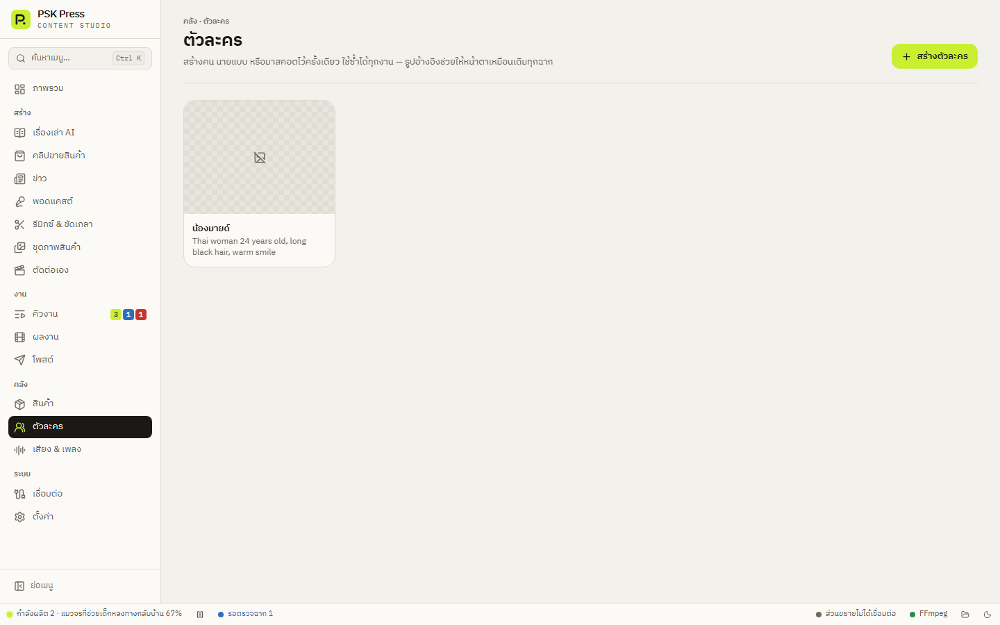

คลัง
ตัวละคร
คนหรือมาสคอตที่หน้าตาเหมือนเดิมทุกคลิป — ใช้เป็นตัวละครในเรื่องเล่า พรีเซนเตอร์ในคลิปขายสินค้า นายแบบในชุดภาพ และโฮสต์พอดแคสต์


สร้างตัวละคร
- กด สร้างตัวละคร
- ใส่รูป (แนะนำ) — อัปโหลดรูปหน้าหรือชีตตัวละคร ตัวละครที่มีรูปอ้างอิงจะหน้าตาคงที่กว่ามาก
- กด ให้ AI กรอกจากรูป — AI อ่านลักษณะภายนอกจากรูปแล้วกรอกช่องให้ (กดเลิกทำได้) AI บรรยายเฉพาะสิ่งที่เห็น ไม่เดาว่าเป็นใคร
- ตรวจและแก้ช่องต่าง ๆ:
- ชื่อ — ใช้ในบทพูดเท่านั้น ภาพจะบรรยายด้วยหน้าตาแทน
- เพศ, อายุ, เชื้อชาติ, บทบาท
- ทรงผม / สีผม, การแต่งกาย, รายละเอียดอื่น
- คำอธิบายที่ใช้กับ AI — ว่างไว้ = ประกอบจากช่องด้านบนอัตโนมัติ
- เสียงประจำตัว (สำหรับพอดแคสต์)
- บันทึก
ชีตตัวละคร
ให้ AI วาดชีตตัวละคร สร้างภาพอ้างอิงบนพื้นเทาอ่อน มีทั้งตัว 1 ท่าและหน้า 4 มุม (หน้าตรง สามส่วนซ้าย ด้านข้าง สามส่วนขวา) ช่วยให้ AI วาดคนเดิมได้แม่นขึ้นทุกฉาก เลือก สไตล์ชีต ได้: ภาพถ่ายสมจริง, ตัวการ์ตูน 3D, อนิเมะ, การ์ตูน 2D, มาสคอตน่ารัก ถ้ามีรูปอยู่แล้ว ปุ่มจะเป็น วาดชีตใหม่จากรูปนี้
สิทธิ์ในใบหน้า
ใช้รูปคนจริงเฉพาะเมื่อได้รับอนุญาตจากเจ้าของใบหน้าแล้วเท่านั้น อย่าใช้รูปดาราหรือคนมีชื่อเสียง และอย่าตั้งชื่อตัวละครซ้ำคนดัง นอกจากผิดสิทธิ์แล้ว Google Flow ยังปฏิเสธคลิปแบบนี้บ่อย
ตัวละครถูกใช้อย่างไร
- เรื่องเล่า — ตัวละครหลัก หน้าตาเหมือนเดิมทุกฉาก
- คลิปขายสินค้า — ผู้นำเสนอ ในโหมดแผ่นสตอรี่บอร์ด รูปตัวละครจะถูกส่งเป็นรูปนายแบบ (รูปสุดท้าย) และในคำสั่งทำคลิปจะเขียนว่า “คนที่คล้ายกับคนในภาพ” เพื่อลดการถูกปฏิเสธ
- ชุดภาพสินค้า — นายแบบ/นางแบบ
- พอดแคสต์ — โฮสต์ (ปุ่ม เลือกจากตัวละคร ดึงรูป คำอธิบาย และเสียงประจำตัว)